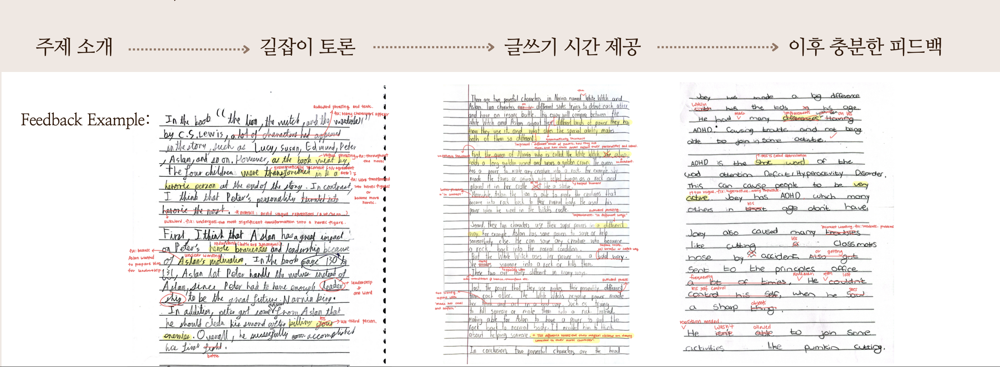
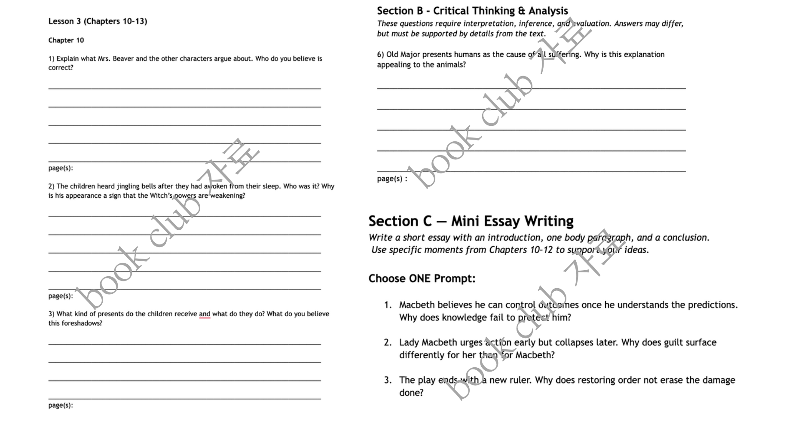

STEP 01
DEEP READ
정독 & 이해책의 줄거리만 읽는 것이 아닙니다. 자체 교재의 주관식 문제를 통해 인물, 사건, 주제와 숨은 맥락까지 정확하게 이해합니다.
WHY 4STEPS?
기존의 많은 북클럽은 좋은 책을 선정하고 아이들이 자유롭게 이야기하는 방식으로 운영됩니다. 그러나 누가 가르치는지, 무엇을 배우는지, 수업 후 무엇이 남는지는 명확하지 않은 경우가 많습니다.
4STEPS는 이 문제에서 출발했습니다. 강사진부터 수업의 구조, 교재, 매주 확인하는 어휘와 글쓰기까지 학부모님이 확인할 수 있는 기준을 만들었습니다.
"책을 읽었다"에서 끝나지 않고, 아이의 머릿속에 남은 생각이 실제 말과 글이 되도록 합니다.
THE 4STEPS DIFFERENCE
강사진의 검증부터 수업의 결과물까지, 4STEPS는 북클럽을 '관리되는 학습'으로 바꿉니다.
VERIFIED FACULTY
4STEPS의 강사진은 단순히 영어를 잘하는 선생님이 아닙니다. 서울대학교 재학 여부와 원어민 수준의 영어 구사력, 그리고 실제 수업 역량을 함께 검증하여 선별합니다.
THE 4STEPS CURRICULUM
STEP 01
책의 줄거리만 읽는 것이 아닙니다. 자체 교재의 주관식 문제를 통해 인물, 사건, 주제와 숨은 맥락까지 정확하게 이해합니다.
STEP 02
교재에서 생각한 질문과 문제를 바탕으로 토론합니다. 근거를 찾고, 자신의 생각을 논리적으로 말하며 비판적 사고력을 키웁니다.
STEP 03
매주 어휘 시험을 통해 책에서 만난 핵심 어휘를 정확하게 익힙니다. 독서가 실제 학업에 필요한 Academic Vocabulary로 확장됩니다.
STEP 04
토론한 생각을 paragraph로 쓰고, 책 한 권을 완독할 때마다 에세이를 완성합니다. 구조와 문장을 꼼꼼하게 첨삭합니다.
4STEPS LEVEL SYSTEM
4STEPS의 레벨은 미국 국제학교 학년 기준(G1–G9)에 맞춰 STEP 1부터 STEP 4까지 4가지 단계로 명확히 나누어집니다.
단계별 체계적인 리딩과 에세이 훈련을 통해 SAT · AP · IB · A-Level을 위한 탄탄한 학술적 기초를 완성합니다.
| 4단계 구분 | 레벨 | 단계 설명 & 학습 목표 |
|---|---|---|
| STEP 1FOUNDATION읽기 습관 형성 | 1G1 | 파닉스와 사이트워드를 기반으로 그림책·초급 리더스를 즐겁게 읽으며 읽기 흥미를 형성하는 단계
|
| 2G2 | 짧은 챕터북을 통해 줄거리를 순서대로 이해하고 기본 문법을 익히는 단계
| |
| STEP 2BUILD-UP어휘 & 사고 확장 | 3G3 | 챕터북 독서량을 늘리며 핵심 어휘와 표현을 문맥 속에서 습득하는 단계
|
| 4G4 | 다양한 장르의 주니어 소설을 읽으며 사실적 이해를 넘어 추론적 사고를 시작하는 단계
| |
| STEP 3GROWTH비판적 사고 & 표현 | 5G5 | 문학 작품 속 인물의 동기와 관점을 분석하며 비판적 사고력을 키우는 단계
|
| 6G6 | 장편 주니어 노블을 통해 폭넓은 어휘와 표현을 습득하고 논리적 글쓰기를 훈련하는 단계
| |
| STEP 4ADVANCE학술 독해 & 입시 기초 | 7G7 | 현대 문학 작품의 이면적 주제를 자신의 관점으로 분석하는 전략적 읽기 단계 — SAT·AP 기초 어휘·독해 훈련 시작
|
| 8G8 | 역사, 과학 관련 분야의 책들도 엄선하여 함께 다루며 학술적 독해력과 비판적 사고를 심화하는 단계
| |
| 9G9 | 대학 교양 수준의 고전문학·시사 텍스트를 분석·비평하는 전략적 읽기의 완성 단계 — SAT·AP·IB·A-Level 본과정 진입 기초 완성
|
파닉스와 챕터북을 시작으로 읽기 흥미와 기초 문장 구조를 차근차근 다집니다.
어휘를 다각도로 확장하며 추론적 독해와 단락 에세이의 기본을 익힙니다.
장편 주니어 노블을 깊이 있게 읽고 비판적 토론과 멀티 패러그래프 에세이를 완성합니다.
문학, 역사, 과학 텍스트를 탐구하여 SAT·AP·IB·A-Level 진입을 위한 학술 독해력을 완비합니다.
INSIDE THE CLASS

주제 소개와 토론 후 충분한 글쓰기 시간을 제공합니다. 완성한 글에는 논리, 구조, 표현, 문법을 구분해 피드백하고 이후 수업에서 개선점을 다시 확인합니다.

사실 확인에 그치지 않고 인물의 선택, 원인과 결과, 주제 해석을 묻는 주관식 문제와 Mini Essay Prompt로 구성됩니다.
FEEDBACK & MANAGEMENT
4STEPS는 화면만 켜놓는 온라인 수업이 아닙니다. 소수 정예 수업, 명확한 결과물, 세밀한 첨삭과 지속적인 관리로 아이의 성장을 확인합니다.
최대 4명의 소그룹 안에서 모든 학생이 읽고, 말하고, 질문하고, 생각합니다. 한 명도 수업 속에 묻히지 않습니다.
책에서 배운 핵심 어휘와 이해도를 매주 확인합니다. 읽은 내용을 실제 언어 자산으로 만들기 위한 지속적인 관리입니다.
책마다 완성한 글을 구조와 문장 단위로 꼼꼼하게 첨삭하고, 다음 학습 목표까지 연결해 성장을 관리합니다.
START WITH 4STEPS
학생의 기본 정보를 알려주시면 상담과 무료 레벨 테스트를 안내해 드립니다.